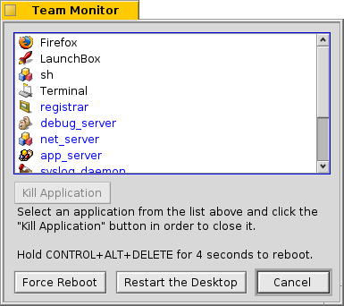

With CTRL ALT DEL you invoke the Team Monitor which lists all currently running programs.
Programs that were launched by the system are blue, those started by the user black.
Applications that are unresponsive, which is often a sign the program has crashed, are marked red. You can kill a program by selecting it and pressing the button.
You can summon a Terminal with ALT SHIFT T.
If your Tracker or Deskbar crashed or froze, a new button appears (you may have to kill the offending team first): will restart Tracker and/or Deskbar for you.